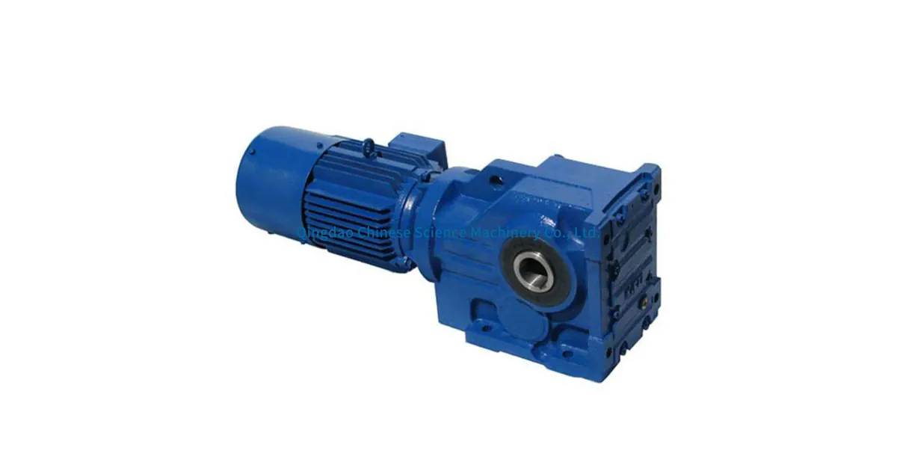
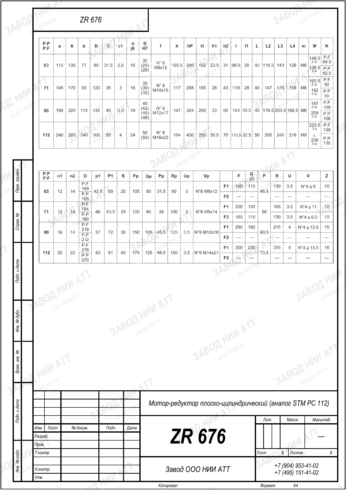

Собственное производствоПромышленные редукторы для производителей оборудования•Отгрузка по всей России•Аналоги SEW, NORD, Bonfiglioli без переделки рамы•Расчёт и КП за 15 минут•Гарантия 36 месяцевПромышленные редукторы для производителей оборудования•Отгрузка по всей России•Аналоги SEW, NORD, Bonfiglioli без переделки рамы•Расчёт и КП за 15 минут•Гарантия 36 месяцев
Инженеры Завода Редукторов · производство и подбор аналогов
STM (Италия) выпускает несколько семейств редукторов под разные задачи. Разбираем серии и показываем, какие типы ZR заменяют импорт STM.
Итальянский производитель STM предлагает червячные, соосно-цилиндрические, конические и планетарные редукторы для конвейеров, мешалок, насосов и тяжёлых приводов. Мы поставляем оригинал STM по запросу и изготавливаем габаритные аналоги ZR. Тип аналога определяется семейством STM, а конкретный номер — расчётом в калькуляторе.
Какие семейства выпускает STM
Линейка STM охватывает основные типы передач: червячные (например, серия MU и родственные), соосно-цилиндрические, конические и планетарные редукторы. Каждое семейство закрывает свой диапазон момента, оборотов и компоновки.
Такое разнообразие позволяет STM закрывать и лёгкие приводы (упаковка, дозаторы), и тяжёлые (мешалки, экструдеры). При подборе аналога сначала определяют семейство, а затем параметры внутри него.
Червячные серии STM
Червячные редукторы STM (в том числе серия MU) выбирают за компактность, большое передаточное число в одной ступени и самоторможение. Их ставят на конвейеры, ворота, дозаторы и упаковочные линии.
КПД червячной передачи снижается с ростом передаточного числа, что учитывают при расчёте мощности. Аналог ZR для этого семейства — червячный редуктор, подобранный по моменту T=9550·P·КПД/n2 и посадкам.

Типовое исполнение коническо-цилиндрического привода
Соосные и конические серии STM
Соосно-цилиндрические серии STM дают высокий КПД и компактную соосную компоновку для конвейеров, насосов и вентиляции. Конические (коническо-цилиндрические) серии применяют, когда валы расположены под углом и нужен большой момент.
Для замены важно совпадение типа (соосный или конический), мощности, оборотов выхода и монтажного исполнения. ZR закрывает оба семейства соответствующими типами редукторов с подбором под ваши параметры.
Планетарные серии STM
Планетарные редукторы STM рассчитаны на высокий момент в компактном корпусе — для тяжёлых приводов, лебёдок, поворотных механизмов. Планетарная схема несёт нагрузку несколькими сателлитами, отсюда высокая удельная нагрузочная способность.
Аналог под планетарные задачи подбираем по требуемому моменту, передаточному числу i=n1/n2 и присоединительным размерам. Для тяжёлых режимов обязательно учитываем сервис-фактор.
Расчёт момента и сервис-фактора перед подбором
Какие типы ZR заменяют STM
ZR — собственное производство (ООО «НИИ АТТ», Челябинск), а не перемаркировка. Под каждое семейство STM подбирается аналогичный тип ZR: червячный под червячные серии, соосно-цилиндрический под соосные, коническо-цилиндрический под конические.
Конкретное обозначение ZR мы не называем произвольно — его выдаёт калькулятор по типу, мощности, оборотам выхода и моменту. Так замена импорта STM идёт без риска ошибиться в характеристиках и посадках.

Габаритный и присоединительный чертёж STM PC 112, лист 6 · аналог ZR 676 — все чертежи STM
Оригинал STM или аналог ZR
Оригинал STM берут при требовании полной взаимозаменяемости по документации и при наличии времени на поставку; цену считаем по запросу. Аналог ZR — когда нужно быстро и без переплаты закрыть позицию.
Мы честно предлагаем обе опции: поставим оригинал STM или изготовим аналог ZR. Для производителей оборудования возможен подбор единой серии ZR под линейку выпускаемых изделий.
Семейства STM и соответствующий тип ZR
Семейство STM
Тип аналога ZR
Червячные (MU и др.)
червячный ZR
Соосно-цилиндрические
соосно-цилиндрический ZR
Коническо-цилиндрические
коническо-цилиндрический ZR
Планетарные
под момент, подбор в калькуляторе
Что нужно для подбора аналога STM
Параметр
Значение
Семейство / тип
с шильдика
Мощность P
кВт
Обороты выхода n2
об/мин
Момент T
T=9550·P·КПД/n2 Н·м
Передаточное число i
i=n1/n2, n1≈1450
Подберём аналог STM под вашу задачу. Введите параметры в калькуляторе подбора — покажем нашу модель ZR и рассчитаем цену. Общее по замене импорта — импортозамещение.
Вопросы и ответы
Частые вопросы: STM и аналоги ZR
Какие типы редукторов выпускает STM?
STM производит червячные (в том числе серию MU), соосно-цилиндрические, конические и планетарные редукторы. Каждое семейство закрывает свой диапазон момента, оборотов и компоновки.
Есть ли у ZR аналоги редукторов STM?
Да, под каждое семейство STM мы подбираем соответствующий тип ZR: червячный, соосно-цилиндрический или коническо-цилиндрический. Конкретный номер выдаёт калькулятор по вашим параметрам.
Как подобрать аналог STM по шильдику?
Определите семейство (тип), снимите мощность P, обороты выхода n2 и передаточное число. Момент считаем по T=9550·P·КПД/n2, передаточное число i=n1/n2 при n1≈1450 об/мин, затем вводим в калькулятор.
Чем отличается серия MU от планетарной?
MU — червячное семейство: компактность и самоторможение при умеренном КПД. Планетарные серии дают высокий момент в компактном корпусе за счёт нескольких сателлитов и подходят для тяжёлых приводов.
Можно ли заменить конический редуктор STM?
Да, коническо-цилиндрический тип ZR заменяет конические серии STM. Важно совпадение мощности, оборотов выхода, момента и монтажного исполнения — пришлите данные с шильдика и фото узла.
Сколько стоит оригинал STM?
Цену на оригинал STM считаем по запросу в зависимости от семейства, типоразмера и сроков поставки. Прайс мы не публикуем — отправьте параметры для расчёта.
Что прислать для подбора аналога?
Тип (семейство), мощность P, обороты выхода n2, желаемый момент — в калькулятор, либо фото шильдика и узла установки. По ним подберём аналог ZR или оформим поставку оригинала STM.
Редукторы STM — червячные, соосные, конические и планетарные семейства для приводов любой сложности. Ниже — обзор серий STM и какие типы ZR заменяют импорт под замену.
Подробнее: характеристики, таблицы и полезные ссылки
STM (Италия) выпускает червячные серии (включая MU), соосно-цилиндрические, конические и планетарные редукторы, закрывая и лёгкие, и тяжёлые приводы. Под каждое семейство подбирается свой тип аналога ZR собственного производства (Челябинск): червячный под червячные, соосно-цилиндрический под соосные, коническо-цилиндрический под конические. Это наши изделия, а не перемаркировка импорта.
Подбор идёт по параметрам: тип, мощность P, обороты выхода n2 и момент T=9550·P·КПД/n2, передаточное число i=n1/n2 при n1≈1450 об/мин. Значения вводятся в калькулятор, который выдаёт вариант аналога ZR; произвольные номера мы не называем. При требовании полной взаимозаменяемости поставим оригинал STM, цену считаем по запросу.
Пришлите фото или чертёж старого редуктора — изготовим аналог с теми же присоединительными. Переходной фланец или спецвал — спроектируем под вашу геометрию.
Какие документы получите с редуктором?
Паспорт изделия с характеристиками, декларация ЕАС, сертификат ГОСТ 31592-2012. Гарантия 36 месяцев — при поломке меняем по договору.
Подберём аналог STM под вашу задачу
Рассчитаем замену по присоединительным размерам, пришлём КП и сроки. Производство ООО «НИИ АТТ», гарантия 36 месяцев.
Рекомендуете наши редукторы коллегам, заказчику или своему отделу снабжения? За каждый состоявшийся заказ по вашей рекомендации выплачиваем 5% от суммы — реферальное вознаграждение переводом на карту. Прозрачный договор, работа со снабженцами и проектными отделами напрямую, отгрузка от производителя (ООО «НИИ АТТ», Челябинск).